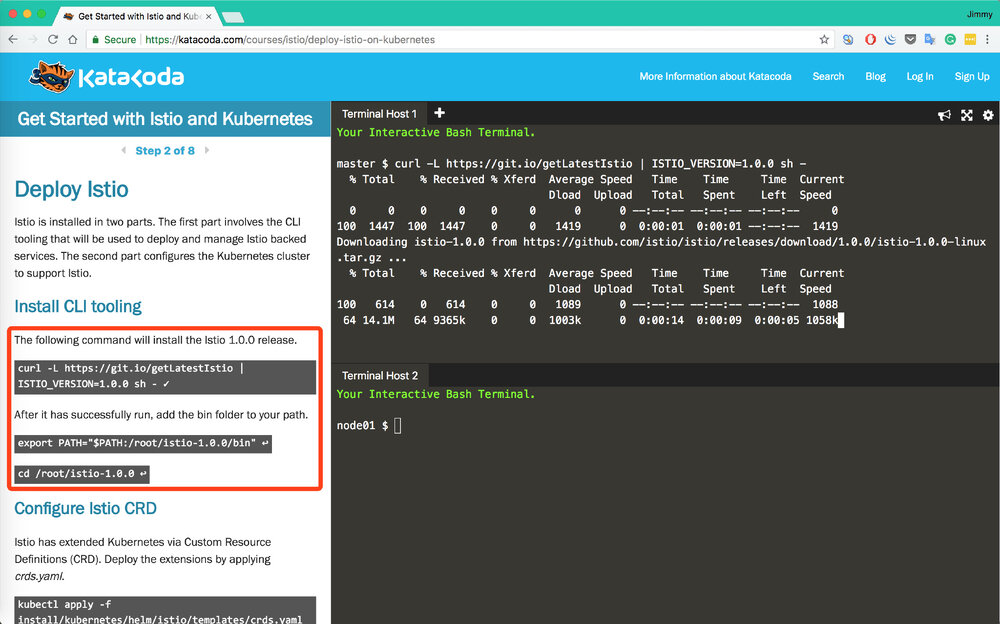
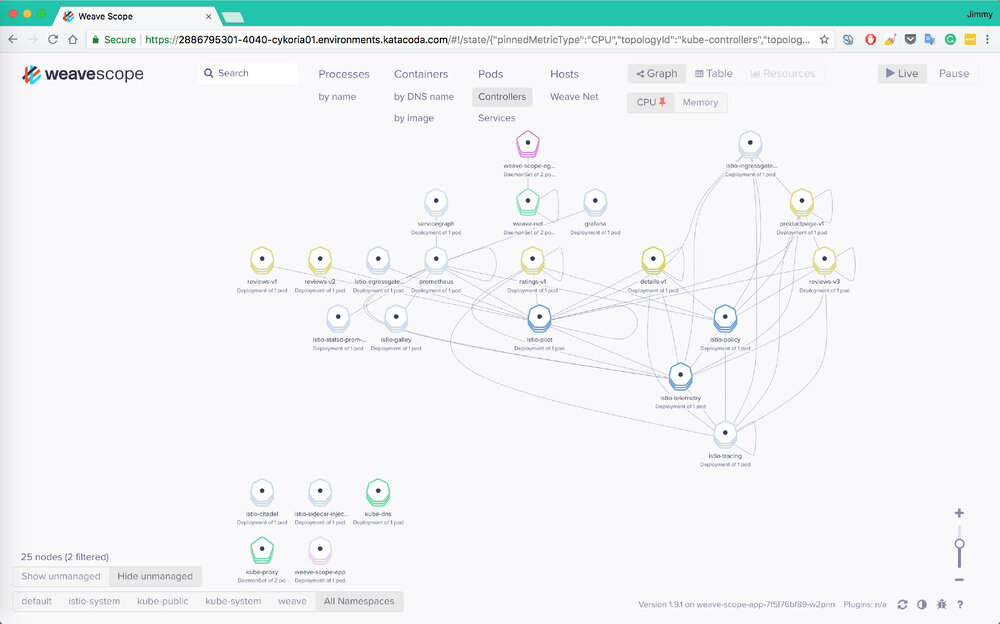
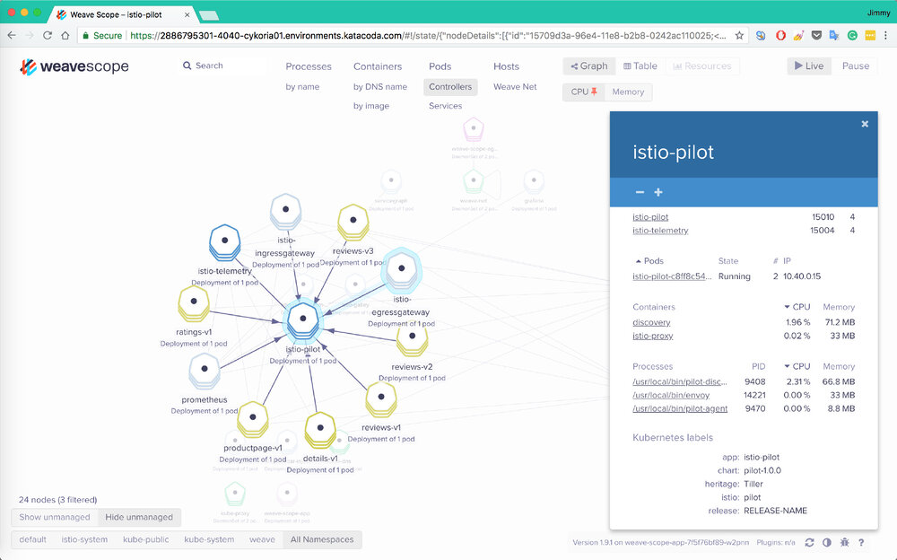
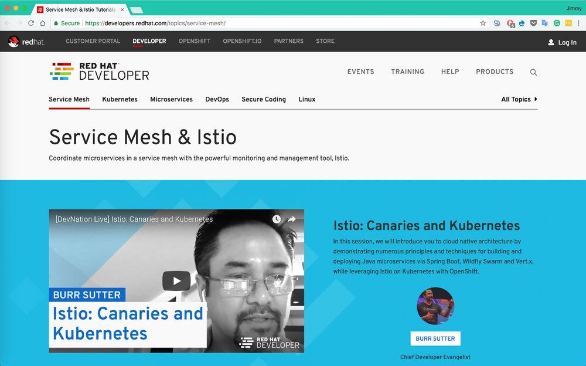
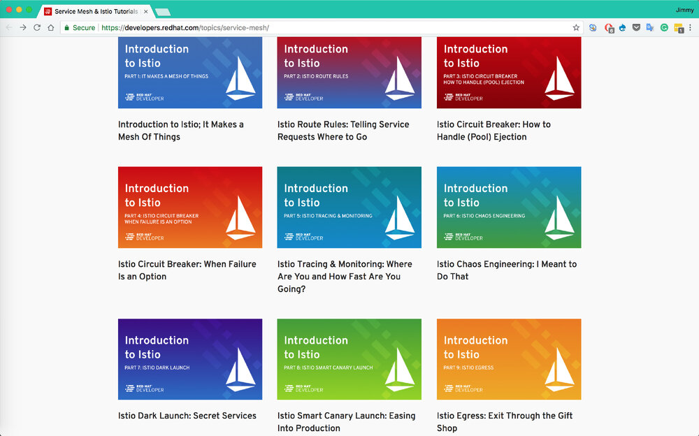
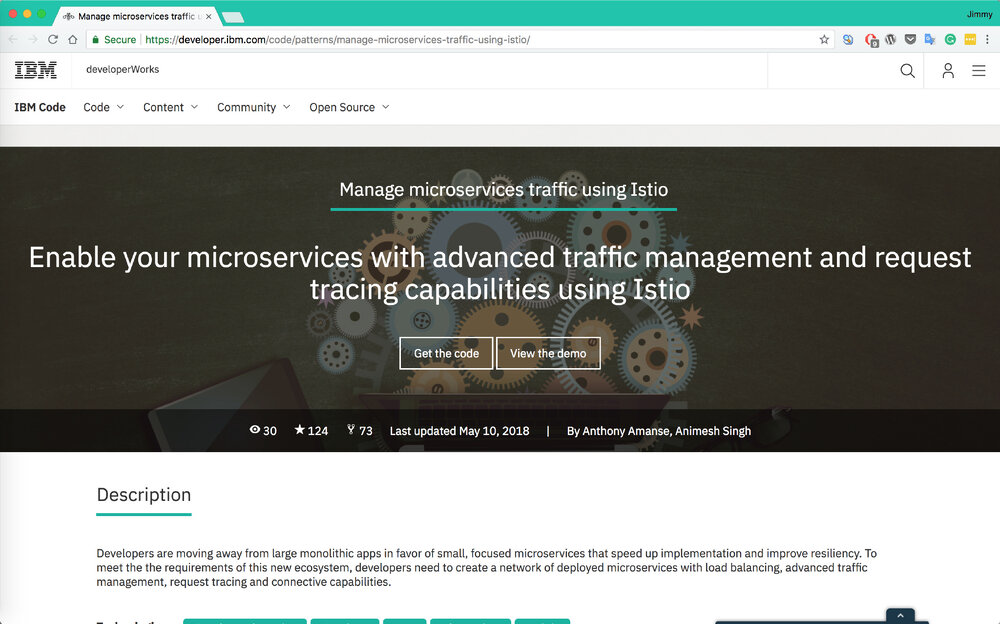
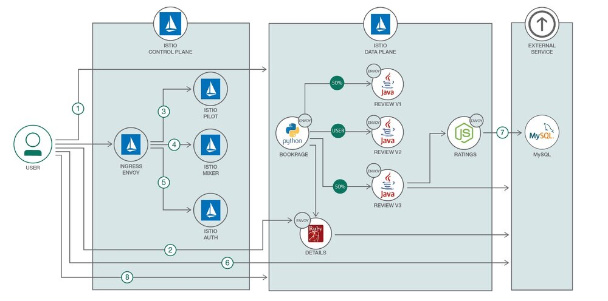
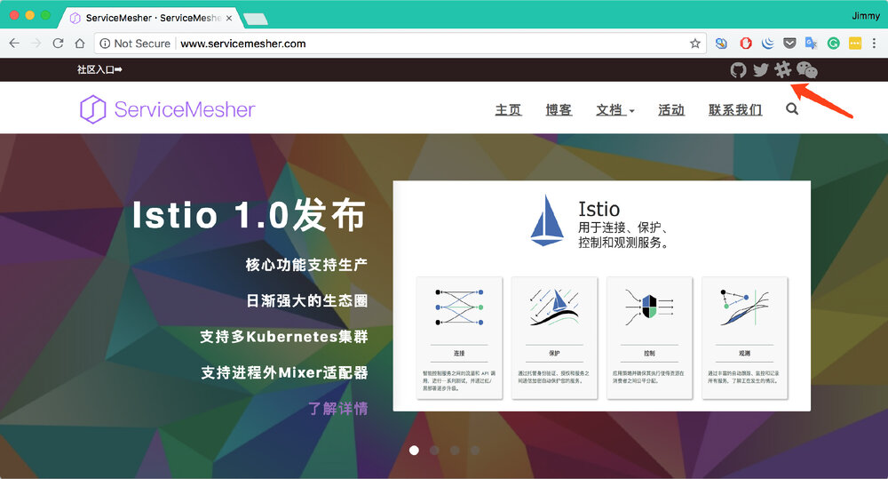

8月1日0点，Istio 1.0发布，已生产就绪！大家都已经跃跃欲试了，几天前我发布了一键在本地搭建运行Istio 1.0的分布式Kubernetes集群教程，在本地搭建起来还是有些门槛，稍显复杂，现在我推荐几个可以在线上学习的地方。这是目前搜集的比较完整的Istio学习环境和包含代码的示例教程有如下几个：
目前搜集的比较完整的Istio学习环境和包含代码的示例教程有如下几个：
- Katacoda的学习环境
- Istio官方的bookinfo教程
- IBM的Istio示例教程
- 我Fork的RedHat的Demo，Christian Posta在OSCON上的Istio workshop
Katacode上的Istio学习环境
推荐指数：⭑⭑⭑⭑⭑
推荐原因：使用简单，使用官方示例，免费，快速，无需注册，可直接通过互联网访问示例应用页面，支持最新版的Istio。
Katacoda已支持Istio 1.0的学习环境。
地址：https://www.katacoda.com/courses/istio/deploy-istio-on-kubernetes


只要傻瓜式操作就可以部署一个Istio出来，同时还提供了Weave scope可以对service mesh的中的服务关系做可视化呈现。

同时还能提供部分监控功能，比如服务状态，CPU和内存使用情况。
Red Hat提供的Istio教程
推荐指数：⭑⭑⭑⭑
推荐原因：教程topic划分简洁得当，RedHat大力加持，未来的频繁更新可以预期。


IBM的Istio示例教程
推荐指数：⭑⭑⭑
推荐原因：IBM作为Istio项目的联合创始公司，在Istio中也有大量的投入，未来可能会有更多的示例放出。
https://developer.ibm.com/code/patterns/manage-microservices-traffic-using-istio


最后更新于2018年5月10号，是基于Istio 0.8的。
GitHub地址：https://github.com/IBM/microservices-traffic-management-using-istio/
其他
推荐指数：⭑⭑⭑
推荐原因：个人演示项目，方便定制和修改代码。
- 我个人Fork的RedHat的Java微服务中使用Istio的教程的demo（中文），目前基于Istio 0.8，未来将支持1.0：https://github.com/rootsongjc/istio-tutorial
- Christian Posta在OSCON上的使用的Istio workshop：https://github.com/christian-posta/istio-workshop
📣ServiceMesher社区新增Slack和Twitter关注方式，欢迎follow。

网址：http://www.servicemesher.com/
Slack：https://servicemesher.slack.com 需要邀请才能加入，有志于加入ServiceMesher社区为Service Mesh作出贡献的同学可以联系我。
Twitter: https://twitter.com/servicemesher